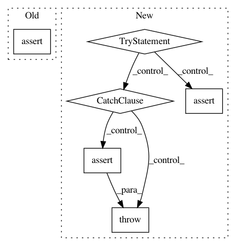

22c8e467fce55e8dd5c2a3b5363ea7fc7ef26bfb,trackpy/tests/test_reproducibility.py,TestReproducibility,test_characterize,#TestReproducibility#,112
Before Change
self.actual.iloc[equal[1]].reset_index(drop=True)
for field in ["mass", "size", "ecc", "signal", "raw_mass", "ep"]:
assert_allclose(equal_f[0][field].values,
equal_f[1][field].values,
rtol=self.characterize_rtol)
def test_link(self):
// run the linking on the expected coordinates, so that tests are
// independent of possible different refine or find results
After Change
actual_coords = df[self.pos_columns].values
actual_char = df[self.char_columns].values
try:
assert_allclose(actual_coords,
self.expected_characterize[:, :2])
except AssertionError:
raise AssertionError("The characterize tests failed as the coords"
" found by locate were not reproduced.")
assert_allclose(actual_char,
self.expected_characterize[:, 2:])
// SCRIPT TO GENERATE THE FEATURES
In pattern: SUPERPATTERN
Frequency: 3
Non-data size: 6
Instances
Project Name: soft-matter/trackpy
Commit Name: 22c8e467fce55e8dd5c2a3b5363ea7fc7ef26bfb
Time: 2018-01-23
Author: caspervdw@gmail.com
File Name: trackpy/tests/test_reproducibility.py
Class Name: TestReproducibility
Method Name: test_characterize
Project Name: brian-team/brian2
Commit Name: ed06699702f6a661542761bf599de74ab102764c
Time: 2014-06-04
Author: marcel.stimberg@ens.fr
File Name: brian2/tests/test_network.py
Class Name:
Method Name: test_invalid_magic_network
Project Name: scipy/scipy
Commit Name: faa3108a4d41d8c5ea204f7f93a6d6d1a9b5d4ce
Time: 2015-08-01
Author: yfeng1@waterfall.dyn.berkeley.edu
File Name: scipy/spatial/tests/test_kdtree.py
Class Name:
Method Name: test_ckdtree_box